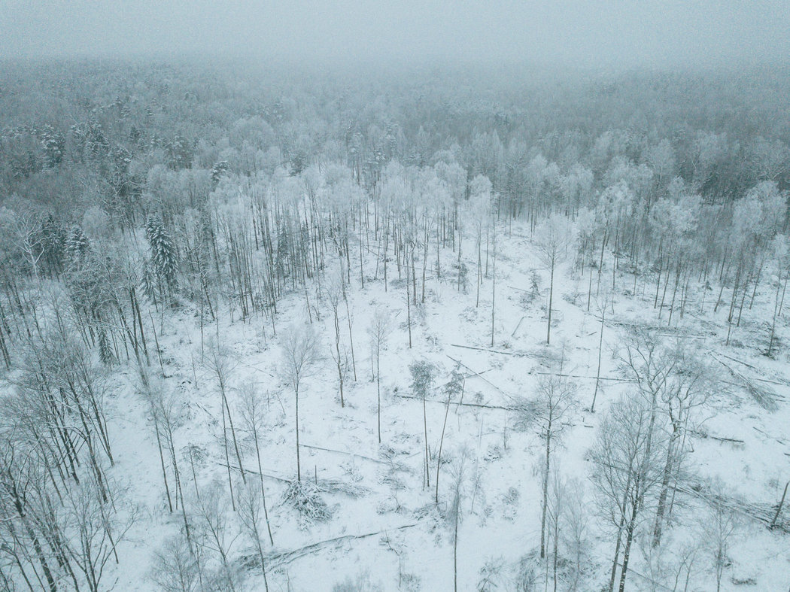
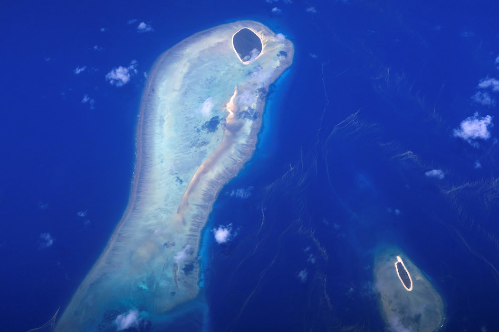
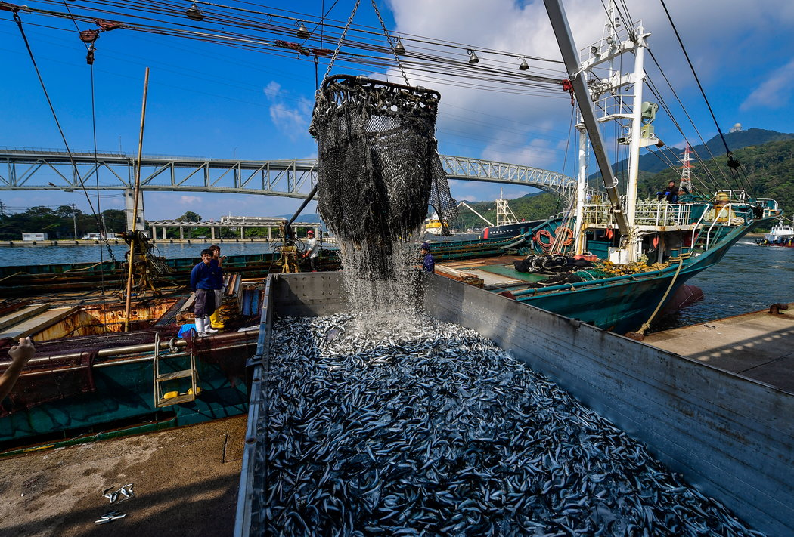

Vida y muerte en un antiguo bosque polaco

El lecho del bosque es un cementerio de píceas y robles caídos.
Pero debajo de las ramas fracturadas y hojas podridas, miles de especies de insectos se alimentan del bosque de Bialowieza. Hay hongos de muchas especies que solo brotan aquí y lo hacen a lo largo de todo el año. Cada año se descubren aún más.
Leer mas
La Gran Barrera de Coral es más vulnerable de lo que se creía

Durante milenios, los ecosistemas han soportado incendios, inundaciones, olas de calor, sequías e incluso enfermedades mediante la adaptación y la reconstrucción de sus comunidades biodiversas.
Sin embargo, de acuerdo con nuevas investigaciones, hay un límite para lo que pueden soportar incluso los lugares más grandes y resistentes, y el cambio climático está poniendo a prueba ese límite al perturbar continuamente uno de los hábitats más valiosos de la Tierra: la Gran Barrera de Coral.
Leer mas
El calentamiento de los océanos podría dejarnos sin peces para comer

La población de peces está disminuyendo a medida que los océanos se calientan, lo cual pone en riesgo una importante fuente de alimentos e ingresos para millones de personas en todo el mundo, de acuerdo con investigaciones recientes publicadas el 28 de febrero. El estudio reveló que la cantidad de alimento marino que los humanos podrían capturar de manera sustentable entre una amplia gama de especies disminuyó un 4,1 por ciento de 1930 a 2010, un efecto del cambio climático ocasionado por el ser humano.
Leer mas